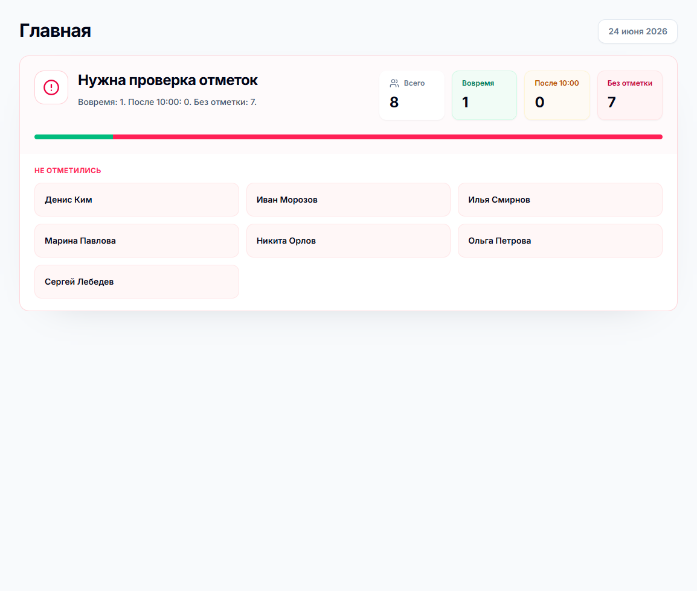
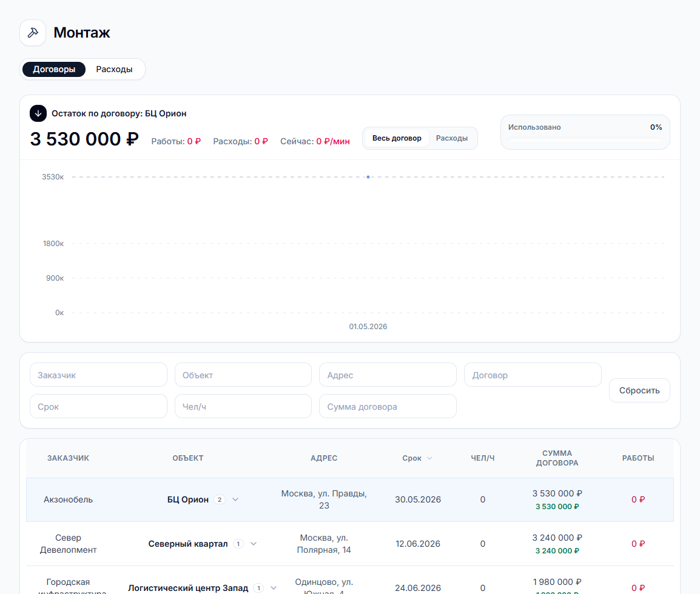

Факт присутствия
Инженер подтверждает прибытие и работу на объекте через NFC-метку. Руководитель видит отметки в админке.
Мобильный контроль объектов
Решение помогает видеть, кто был на объекте, когда была подтверждена работа с журналом и какие отчеты с фото или видео переданы в офис.
Что делает система
Инженер подтверждает прибытие и работу на объекте через NFC-метку. Руководитель видит отметки в админке.
Отдельная метка журнала подтверждает, что инженер дошел до нужной точки и работал с объектовой документацией.
Описание работ, фотографии, видео и файлы попадают в единый список, где их можно фильтровать по объекту, инженеру и периоду.
NFC-метки
NFC-метка закрепляется там, где нужно подтвердить реальное действие инженера: вход на объект, завершение смены или работу с журналом.

Сканирование NFC
Метка присутствия подтверждена. Событие отправлено на сервер.
В админке метка инициализируется, привязывается к объекту и получает тип: присутствие или журнал.
Мобильное приложение считывает NFC-данные и передает результат в backend вместе с контекстом действия.
Сервер сверяет зарегистрированную метку, объект, тип действия и защищает поток от повторных сканов.
Отметка сразу появляется в контроле присутствия, статусах объектов, отработанном времени и отчетах.
Отчеты
Drawer с отчетом показывает дату, инженера, объект, описание работ и вложения. Это удобно для быстрой проверки без перехода между страницами.

ТО
В разделе ТО строка объекта открывает drawer с последним сканом, договором, ответственным инженером и историей отметок.

Веб-админка
Админка показывает то, что важно руководителю: отметки, статусы объектов, отчеты, метки и монтажные договоры.




Для покупателя
NFC-метка привязана к конкретному объекту и действию, поэтому отметка становится проверяемым событием.
Руководитель видит проблемные зоны сразу: кто не отметился, где есть проблема, какие отчеты пришли.
Фото, видео, описание и объект связаны между собой, поэтому материалы не теряются в чатах.
Система состоит из мобильного приложения, backend, PostgreSQL, веб-админки и файлового хранения на Synology.
Текущая архитектура
Бизнес-логика находится на backend. Мобильные приложения отправляют действия, а админка показывает проверенные данные.
SMK
Страница адаптирована под телефон и десктоп, использует реальные экраны админки и объясняет ценность NFC-сценария для бизнеса.